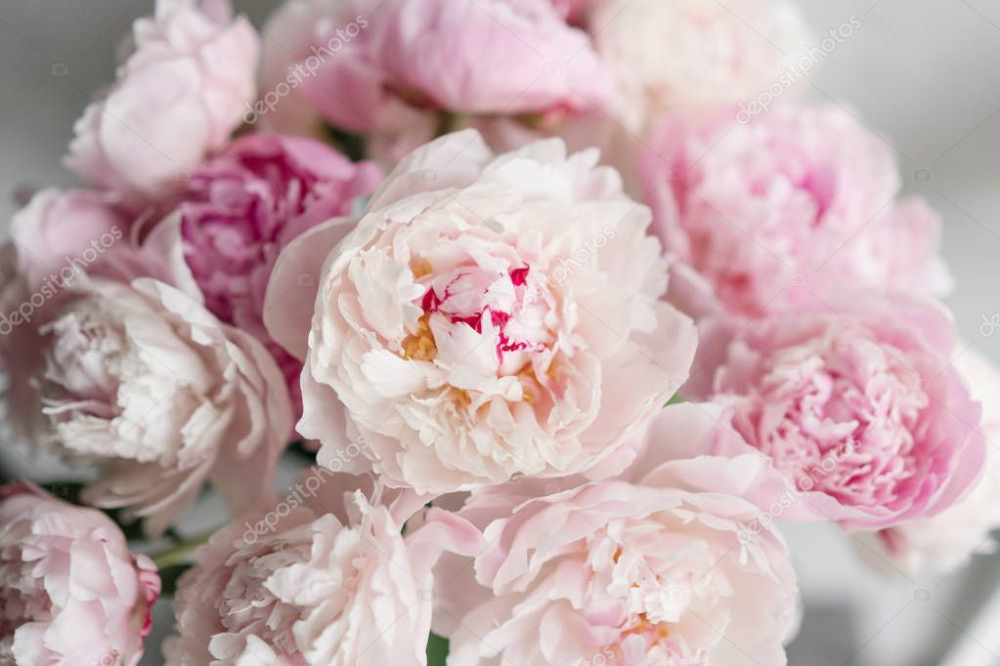

Que son las peonias
Las peonías, de nombre científico Paeoniaceae, son toda una familia de plantas con origen en Europa, América del Norte y China y sus alrededores.
Cuándo florecen las peonías
Las peonias florecen en primavera, generalmente entre mayo y julio, dependiendo de la variedad y el clima.
Button
Como se cuidan las peonias
Las peonias requieren un cuidado moderado. Necesitan un suelo bien drenado, pleno sol y riego regular. Tambien es importante fertilizarlas anualmente.